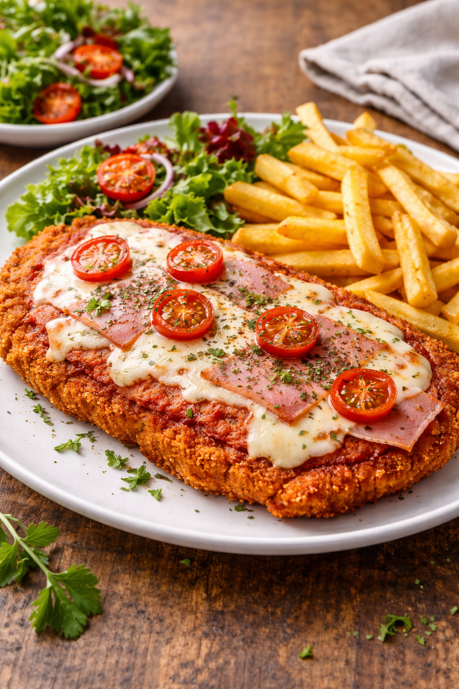

Milanesa a la Napolitana

Descripción
La milanesa napolitana es un plato creado en Buenos Aires y su nombre (o su apellido más bien) “napolitana” o “a la napolitana”
no viene de la ciudad de Nápoles sino del Napoli, un restaurante ubicado frente al Estadio Luna Park, sobre la Avenida Corrientes.
Ingredientes
- 4 bifes de nalga (también puede ser bola de lomo o cuadrada)
- 2 huevos
- 2 dientes de ajo picados
- Perejil picado, a gusto
- Sal y pimienta, a gusto
- Pan rallado, c/n
- Aceite para freír, c/n
- 1 taza de salsa de tomate (cocinada 10 minutos)
- 4 fetas de jamón cocido
- 250 g de queso mozzarella (cortado en cubos o fetas)
- Orégano seco para decorar (opcional)
- Aceite de oliva, c/n
Pasos
- Quitar el exceso de grasa que puedan tener las milanesas en los bordes y golpearlas con un martillo de cocina si están muy gruesas. Salar por ambos lados.
- Batir los huevos con ajo picado, o pasta de ajo, y abundante perejil picado. Sumergir las milanesas en esa mezcla y dejar reposar unos 10 minutos.
- Luego colocar el pan rallado en una fuente amplia y poco profunda, y pasar las milanesas por el pan, golpeando con las manos para que se adhiera bien.
- Freír las milanesas en aceite bien caliente hasta que estén doradas de ambos lados. Retirar y colocar sobre papel absorbente.
- Preparar la salsa de tomate: Si no hay salsa lista, cocinar una lata de tomate triturado por 10 minutos a fuego medio.
- Disponer las milanesas en una bandeja para horno (sin aceite). Cubrirlas con una capa de salsa de tomate, una feta de jamón y el queso mozzarella cortado en cubitos
- Llevar al horno precalentado a 200ºC unos 5/7 minutos hasta que el queso se derrita y se gratine.
- Decorar la milanesa napolitana con orégano (opcional) y servir con puré de papas, papas fritas o el acompañamiento que prefieran. ¡Voilá!
Home